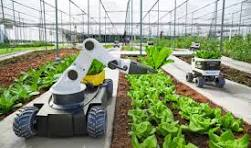
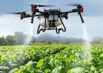
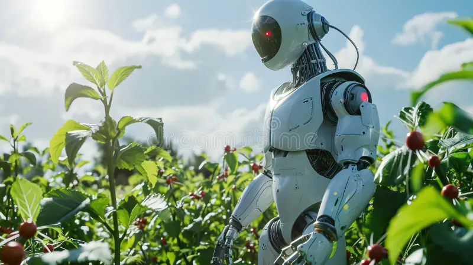
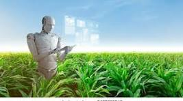

Explore how automation and robotics are shaping the future of farming.
AgriBotics is a research and innovation initiative focused on integrating robotics into modern agriculture. The goal is to improve efficiency, reduce labor, and support sustainable farming practices using automation.
AgriBotics aims to lead the agricultural sector into a new era of precision farming. We will achieve this by: Enhancing Crop Yields: Using AI to predict optimal planting times, forecast crop growth patterns, and anticipate yield variations. Optimizing Resource Utilization: Implementing precision irrigation and fertilizer application based on real-time data to conserve resources and minimize environmental impact. Proactive Pest and Disease Management: Analyzing data to identify potential pest outbreaks or disease occurrences early, enabling timely preventive measures. Empowering Farmers: Providing prescriptive insights and decision-support tools to optimize crop management practices, increase productivity, and ensure sustainability.
IoT Sensors: We will utilize advanced IoT sensors equipped with micro-electromechanical systems (MEMS) technology to measure soil moisture levels, temperature variations, and crop health indicators with high accuracy and reliability. Artificial Intellegence (AI) & Machine Learning (ML) : Our platform will employ AI and ML algorithms, such as Convolutional Neural Networks (CNNs) for image recognition and Recurrent Neural Networks (RNNs) for processing time-series data. These technologies will enable predictive analysis and decision-making, revolutionizing agricultural practices. Optimization techniques : We will implement advanced optimization techniques like stochastic gradient descent (SGD) and adaptive learning rates to train AI models efficiently, ensuring high accuracy and fast convergence. Mobile & Web Development : Using frameworks like React Native and Angular, we will develop cross-platform mobile and web applications that provide farmers with seamless access to critical agricultural information, enabling data-driven decisions for optimizing resource usage and maximizing yields.



